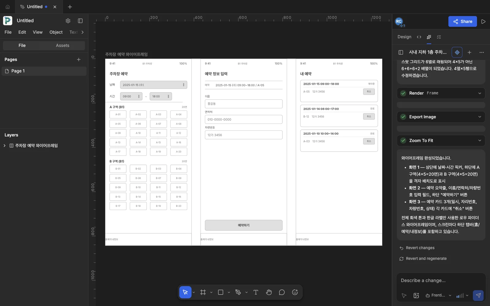
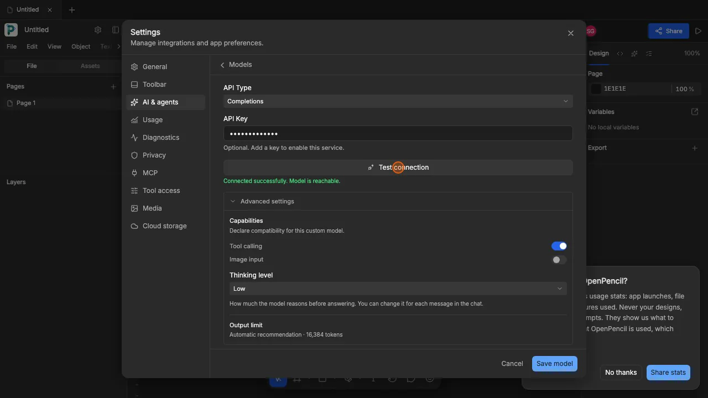
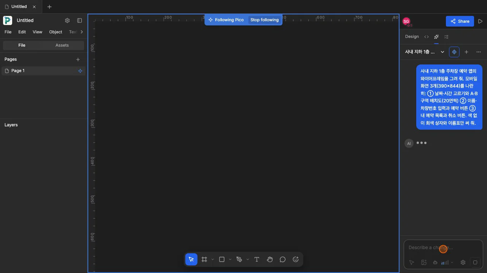
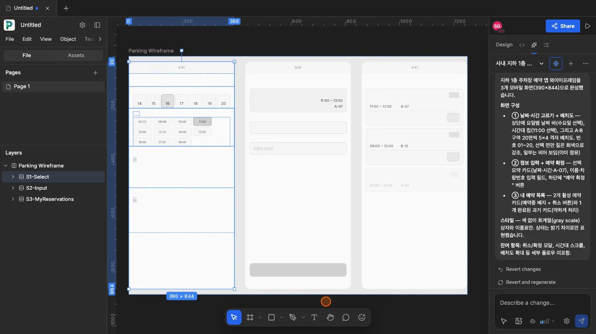
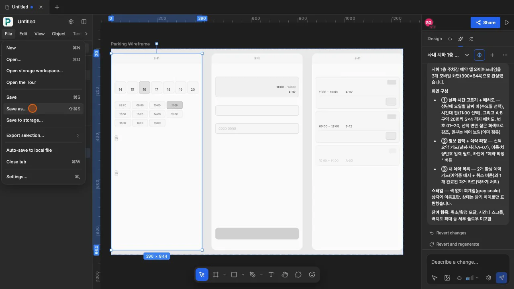

Figma 파일(
.fig)을 읽고 쓰는 오픈소스 디자인 편집기 OpenPencil에 사내 모델(Frentis)을 연결해, 2장과 같은 요청으로 주차장 앱 와이어프레임을 그려 봅니다. 외부 AI 서비스에 요구 사항과 화면을 보내지 않고도 같은 흐름을 구현할 수 있는지, 사내 모델을 연결할 때 무엇에 주의해야 하는지 살펴봅니다.
한글 글꼴을 넣은 데스크톱판 OpenPencil KR 내려받기
공개 웹 앱(app.openpencil.dev)에서는 한글이 포함된 글 상자가 캔버스에 표시되지 않을 수 있습니다(2026년 11월 14일 확인). uEngine이 최신 소스에 한글 글꼴(Pretendard·Noto Sans KR·나눔명조)을 넣어 빌드한 데스크톱판 OpenPencil KR(macOS·Windows)을 AI 도구 모음 → OpenPencil KR에서 내려받을 수 있습니다. 데스크톱판에서는 사내 게이트웨이 주소를 입력해 중계 없이 연결합니다.

무엇을 · 왜#
2장의 Claude Design은 claude.ai 안에서 Anthropic 모델로 동작합니다. 회사 규정상 외부 AI 서비스에 기획 내용을 보낼 수 없거나, 디자인 팀과 Figma 파일을 주고받아야 한다면 다른 선택지가 필요합니다. OpenPencil은 그런 경우에 쓸 수 있는 오픈소스 디자인 편집기입니다.
| 항목 | OpenPencil |
|---|---|
| 라이선스 | MIT 오픈소스(클라우드 기능만 Apache 2.0) |
| 실행 | 데스크톱 앱(macOS·Windows·Linux, 약 15MB) 또는 웹 앱 app.openpencil.dev에서 실행합니다. 한글 글꼴을 내장한 OpenPencil KR도 있습니다. |
| Figma 호환 | .fig 파일을 열고 저장하며, 앱 사이에서 노드를 복사·붙여넣기합니다. |
| AI | 채팅(⌘J)에서 100개가 넘는 도구로 화면을 만들고 수정합니다. 사용자 키를 입력하는 방식(BYOK)으로, OpenAI·Anthropic 호환 주소라면 어떤 모델이든 연결합니다. |
| 자동화 | CLI(openpencil), MCP 서버, Claude Code·Codex 같은 코딩 에이전트 연결 |
이 장에서는 회사 게이트웨이의 Frentis 모델(OpenAI 호환 API, 모델 이름 frentis-ai-model)을 연결했습니다. 디자인 요청과 화면 정보가 회사 밖으로 나가지 않습니다.
따라 하기#
-
OpenPencil 열기. 웹 앱
https://app.openpencil.dev를 열거나 데스크톱 앱을 설치합니다. 한글로 작업한다면 OpenPencil KR을 받아 설치하세요(공식 데스크톱 앱은 macOS에서brew install --cask openpencil). 첫 화면에는 「Welcome to OpenPencil」과 「Import Figma files and make them your own」 안내 문구가 보입니다. 「Design with AI」·「Take the tour」 카드도 있습니다. -
사내 모델 등록. 첫 화면의 「Set up AI」 → 「Advanced settings」를 누르면 Settings의 AI & agents → Models가 열립니다. 「Design model」을 열어 아래와 같이 입력합니다.
칸 넣은 값 Name Frentis 사내 모델 AI Provider OpenAI-compatible Model ID 「Custom model…」을 고르면 나오는 Custom model ID 칸에 frentis-ai-modelBase URL 사내 게이트웨이 주소(이 실습은 아래 상자의 로컬 중계 http://127.0.0.1:8788/v1)API Type Completions(그대로) API Key 사내 키(이 실습은 중계가 키를 넣으므로 아무 글자) Advanced settings → Thinking level Low(Capabilities의 Tool calling은 켜진 그대로) 「Test connection」을 누르면 「Connected successfully. Model is reachable.」이라는 안내가 나옵니다. 같은 화면의 Output limit에는 「Automatic recommendation · 16,384 tokens」가 보입니다. 「Save model」로 저장합니다.

Test connection 성공: Thinking level Low, Output limit 16,384토큰 -
와이어프레임 요청. 오른쪽 패널의 AI 탭에서 2장의 첫 요청과 같은 내용(화면 3개, A·B 구역 20면씩, 회색 상자와 이름표만)을 보냅니다.
사내 지하 1층 주차장 예약 앱의 와이어프레임을 그려 줘. 모바일 화면 3개(390×844)를 나란히: ① 날짜·시간 고르기와 A·B 구역 배치도(20면씩) ② 이름·차량번호 입력과 예약 버튼 ③ 내 예약 목록과 취소 버튼. 색 없이 회색 상자와 이름표만 써 줘.모델이 그리는 동안 캔버스 위에 「Following Pico」와 「Stop following」이 보이고, 화면은 AI가 그리는 위치를 따라 움직입니다. 캔버스에는 디자인 점검 표시(빨간·노란 동그라미)도 나타납니다.

사내 모델이 그리는 중: Following Pico 띠와 점검 표시 -
결과 보기. 요청을 보낸 지 55초 만에 작업이 끝났습니다. View 메뉴에서 「Design issues」를 끄면 점검 표시가 사라집니다. Shift+1로 전체를 화면에 맞춥니다. 레이어에는 「Parking Wireframe」 아래 S1-Select, S2-Input, S3-MyReservations 세 프레임(390×844)이 생겼습니다.
화면 캔버스에 그려진 것 S1-Select 날짜 칩 14~20일(16일 선택), 시간 칸 08:00~18:00(11:00 선택), 구역 자리에 「20」 이름표 S2-Input 선택 요약 카드(11:00 ~ 13:00 · A-07), 입력 칸 두 개, 아래쪽 버튼 S3-MyReservations 예약 카드 세 장(A-07, B-12, 흐리게 처리한 A-03) 채팅에는 화면별로 만든 내용과 「잔여 항목: 취소/확정 모달, 시간대 스크롤, 배치도 확대 등 세부 플로우 미포함」이 정리됐습니다. 「Revert changes」로 이번 변경을 되돌릴 수 있습니다.

Frentis가 그린 세 화면과 레이어, 채팅 요약 채팅 요약에는 「A·B 구역 20면씩 5×4 격자 배치도, 번호 01~20」이라고 적혀 있지만, 캔버스의 구역 자리에는 「20」이라는 작은 이름표만 있고 칸은 그려지지 않았습니다. 모델의 요약에 앞서 캔버스를 직접 확인하고, 같은 채팅에서 「A 구역과 B 구역을 20면씩 5×4 칸으로 그리고 번호를 붙여 줘」처럼 빠진 부분을 하나씩 더 요청해 다듬습니다.
-
Figma 파일로 저장. File 메뉴의 「Save as…」(⇧⌘S)로
.fig파일을 저장합니다. 웹 앱에서는 브라우저의 파일 저장 창이 열립니다.
File 메뉴의 Save as…
사내 모델을 연결하며 겪은 일#
웹 앱에서 http 게이트웨이는 바로 부를 수 없다
웹 앱은 https 페이지이므로 http:// 주소로 요청을 보내면 브라우저가 차단합니다(혼합 콘텐츠). 공식 문서에 따르면 데스크톱 앱은 CORS를 거치지 않으므로 게이트웨이 주소를 바로 넣으면 됩니다. 이 실습에서는 녹화를 위해 웹 앱을 사용했습니다. 내 PC에 작은 중계(127.0.0.1:8788)를 실행해 요청을 게이트웨이로 전달했습니다. 중계가 회사 키와 CORS 헤더를 추가하므로 화면에는 키가 나오지 않습니다. 이때 Chrome은 이 사이트의 로컬 네트워크 접근을 허용할지 묻습니다. 허용하지 않으면 「Could not reach this endpoint from the browser. Try the desktop app or use an endpoint with CORS enabled.」가 나옵니다. OpenPencil KR 데스크톱판에서는 게이트웨이 주소(http://…/v1)를 입력하자 중계 없이 「Connected successfully. Model is reachable.」이 표시됐습니다.
추론 모델은 출력 한도가 작으면 빈 답을 낸다
처음에는 요청을 보내도 캔버스에 아무것도 생기지 않고 「Regenerate」만 보였습니다. 중계에서 요청을 확인하니 OpenPencil이 이 사용자 지정 모델에 출력 한도를 max_tokens: 1024로 보냈습니다. Frentis는 그 1,024토큰을 모두 추론에 사용해 finish_reason: length로 응답을 마쳤습니다. 도구 호출도 텍스트도 없는 빈 응답입니다. 중계에서 출력 한도를 16,384로 올리고 Thinking level을 Low로 낮추자 와이어프레임이 그려졌습니다. 사내 추론 모델을 다른 도구에 연결할 때는 Output limit과 Thinking level부터 확인하세요. 최신 소스로 빌드한 OpenPencil KR에서는 Output limit이 자동 추천값인 16,384토큰으로 설정됐습니다. 중계 없이 연결해도 와이어프레임이 그려졌습니다.
확인 문제#
OpenPencil에 사내 모델을 연결하려면 어떤 값이 필요한가요?
AI Provider에서 OpenAI-compatible(또는 Anthropic-compatible)을 선택합니다. Model ID에서 「Custom model…」을 선택해 게이트웨이의 모델 이름(frentis-ai-model)을 입력합니다. Base URL에는 게이트웨이 주소를, API Key에는 사내 키를 넣습니다. 추론 모델이면 Advanced settings에서 Thinking level을 낮추고, 「Test connection」으로 확인한 뒤 저장합니다.
웹 앱과 데스크톱 앱 가운데 사내 게이트웨이에는 어느 쪽이 편한가요?
데스크톱 앱입니다. 웹 앱은 브라우저의 혼합 콘텐츠·CORS 규칙을 따르므로 게이트웨이가 https와 CORS를 지원해야 하고, 내 PC의 중계를 쓰려면 로컬 네트워크 접근도 허용해야 합니다. 공식 문서에 따르면 데스크톱 앱은 CORS를 거치지 않고 요청합니다. 한글로 작업할 때는 한글 글꼴을 내장한 OpenPencil KR을 사용할 수 있습니다.
채팅 요약에 「배치도 완성」이라고 나오면 그대로 믿어도 되나요?
아닙니다. 이 실습의 채팅 요약에는 A·B 구역 20면씩의 격자 배치도를 그렸다고 나왔지만, 캔버스에는 「20」 이름표만 있었습니다. 레이어와 캔버스를 직접 확인하고, 빠진 부분은 같은 채팅에서 구체적으로 다시 요청합니다.
채팅에 보냈는데 캔버스에 아무것도 생기지 않으면 무엇부터 보나요?
모델의 응답이 비어 있는지 확인합니다. 이 실습에서는 출력 한도인 1,024토큰을 모두 추론에 사용해 빈 응답이 왔습니다. 출력 한도를 늘리거나 Thinking level을 낮추고, 모델이 도구 호출(Tool calling)을 지원하는지도 Advanced settings에서 확인합니다.